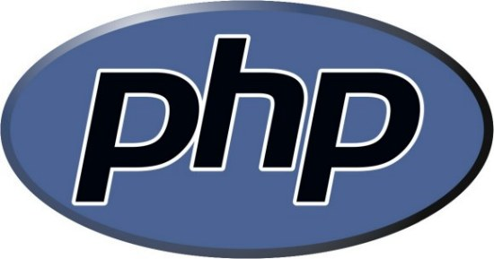

Focus on government transparency is not new
- Idea that government should be open to public scrutiny is old
- Started in the US with the First Amendment (1791): Freedom of the Press
- Focus in the US picked up with the Freedom of Information Act (1966)
- Renewed (recent) focus with the Open Government Initiative (2009-present)
- Open Government Initiative has specifically given focus to data
So where's the data now?
Why?
- Government agencies need to determine what data can be made public
- Legitimate concerns about citizen privacy and national security
- Some information is pre-decisional or could have adverse impacts
- Review processes are time-consuming and costly
- Once review processes are complete, agencies release data as quickly as possible, often without any modification of format
- Many researchers request bulk data formats, which agencies interpret as uploading flat files to their web servers
A Short Trip Back to 2007
A look at what we mean by "open" and how APIs help
8 Principles for Open Government Data (2007)
Drafted by Open Government Working Group, December 7-8, 2007.
Government data shall be considered open if it is made public in a way that complies with the principles below:
| Complete | All public data is made available. Public data is data that is not subject to valid privacy, security or privilege limitations. |
|---|---|
| Primary | Data is as collected at the source, with the highest possible level of granularity, not in aggregate or modified forms. |
| Timely | Data is made available as quickly as necessary to preserve the value of the data. |
| Accessible | Data is available to the widest range of users for the widest range of purposes. |
| Machine processable | Data is reasonably structured to allow automated processing. |
| Non-discriminatory | Data is available to anyone, with no requirement of registration. |
| Non-proprietary | Data is available in a format over which no entity has exclusive control. |
| License-free | Data is not subject to any copyright, patent, trademark or trade secret regulation. Reasonable privacy, security and privilege restrictions may be allowed. |
A well-designed API can easily help with 5 of 8
Drafted by Open Government Working Group, December 7-8, 2007.
Government data shall be considered open if it is made public in a way that complies with the principles below:
| Complete | All public data is made available. Public data is data that is not subject to valid privacy, security or privilege limitations. |
|---|---|
| Primary | Data is as collected at the source, with the highest possible level of granularity, not in aggregate or modified forms. |
| Timely | Data is made available as quickly as necessary to preserve the value of the data. |
| Accessible | Data is available to the widest range of users for the widest range of purposes. |
| Machine processable | Data is reasonably structured to allow automated processing. |
| Non-discriminatory | Data is available to anyone, with no requirement of registration. |
| Non-proprietary | Data is available in a format over which no entity has exclusive control. |
| License-free | Data is not subject to any copyright, patent, trademark or trade secret regulation. Reasonable privacy, security and privilege restrictions may be allowed. |
Open Data Principle: Primary
Data is collected at the source, with the highest possible level of granularity, not in aggregate or modified forms.
APIs can help agencies to deliver more granular data by:
- Connecting directly to transactional data stores
- Connecting indirectly to transactional data stores via ETL processes
- Allowing partial retrieval of data customized to the user's needs
- Allowing retrieval of aggregate data via on-the-fly computation
Open Data Principle: Timely
Data is made available as quickly as necessary to preserve the value of the data.
APIs can help agencies to deliver data more quickly by:
- Automating the release of data through intelligent marking of database records
- Pulling data from transactional data stores without human intervention
- Reducing time required to aggregate data by providing on-the-fly computation in the API
- Easing the burden of disclosure review processes by enabling automated testing via a private version of the same API
Open Data Principle: Accessible
Data is available to the widest range of users for the widest range of purposes.
APIs allow a broad set of users to determine the subset of data they need by:
- Providing for granularity, subset retrieval, and on-the-fly aggregation
- Providing several data formats
- Allowing for simultaneous availability of bulk download and streamed data
- Providing the opportunity for multiple versions of the same API
Open Data Principle: Machine processable
Data is reasonably structured to allow automated processing.
APIs by definition are intended to enable automated processing:
- Calls can be ReSTful over the web or use heavier web service models
- APIs can return a variety of data formats based on parameters in the API call
- Providing API wrappers for common languages is a simple task that can further enable users to do automated processing
- Agencies can use the same APIs to build visualizations and explanations of the data for their websites and publications
Open Data Principle: Non-proprietary
Data is available in a format over which no entity has exclusive control.
Well-designed APIs provide data in a variety of formats:
- APIs provide data in well-used open standards-based data formats like XML, JSON, and OData
- Providing more proprietary formats is also possible where necessary, but does not preclude the open standards-based formats
- Data format documentation can be baked into the API as a structure or schema call
- Creation of documentation can be automated so that the API can self-generate and deploy documentation to a website
The OMB Public Budget Database
About the dataset
Dataset: the OMB Public Budget Database
The Office of Management and Budget, each year, alongside the President's Budget, publishes the Public Budget Database, a dataset containing historical numbers and projections in summary from the Budget's published tables.
- Consists of a User's Guide and three data files
- Budget Authority
- Outlays
- Receipts
- Data files are available as bulk downloads in CSV and Microsoft XLS formats
- Data files are comparably small, and data is aggregated at the account level
- Unique key for each record in each data file consists of the composition of 7 or more columns
- Several limitations on use inherent in the data are discussed in the User's Guide
Dataset: Quirks and Considerations
- Data is generally consistent with what's in the Treasury Monthly Statement
- Corrections to reporting and classification errors
- Analytical Perspectives volume of Budget addresses inconsistencies
- Historical records adjusted to match current budget structure
- Current & budget year estimates prepared by agencies per OMB Circ. A-11
- Data have sufficient detail to produce totals consistent with those published in the corresponding Budget document
- Outlay totals by agency, subfunction, and BEA category
- Receipt totals by source
- The deficit (on-budget, off-budget, and unified budget basis)
Dataset: Limitations
- Data files do not include
- Data by object classes
- Data for program and financing accounts
- Data for character class (other than grants to State/local governments)
- Data for personnel summaries
- Data for credit schedules
- Account-level details do not include current services estimates (based on proposed Budget only)
- Receipts data prior to 1982 are aggregates, not true account-level detail
- Budget authority data prior to 1976 not available
- Outlay data for 1962-1981 tend to be account-level details
- Outlay data for Legislative Branch & DoD only bureau-level before 1982
Building the API
Some examples from my experience
Making the API Help with Openness (A Recap)
| Primary | Timely | Accessible | Machine processable | Non-proprietary | |
|---|---|---|---|---|---|
| Easing data release processes, clearance and development | ✔ | ||||
| Allowing partial retrieval of data | ✔ | ✔ | |||
| Allowing retrieval of aggregated data via on-the-fly computation | ✔ | ✔ | ✔ | ||
| Providing delivery of data in open data formats | ✔ | ✔ | ✔ | ||
| Allowing for delivery of data in custom data formats | ✔ | ||||
| Allowing management of multiple simultaneous versions | ✔ | ||||
| Allowing access to data via multiple API views | ✔ | ✔ | |||
| Modeling entities and pulling data from a database | ✔ | ✔ | |||
| Automating documentation of data and data access | ✔ | ✔ | |||
| Enabling data use and visualization | ✔ |
Making the API Help with Openness (Examples)
- Spinning up an API in no time
- Defining API endpoints
- Using different data formats
- Versioning the API
- Creating different API components
- Modeling entities
- Connecting to a database
- Self-generating documentation
- Using data via the API
My development stack


Spinning up an API in no time
Ruby + Rack + Grape
Use github.com/dblock/grape-on-rack as a great starting point.
The API is defined by subclassing the Grape::API class.
module BudgetData
class API < Grape::API
...
end
end
Add the API to your Rack configuration file (config.ru).
run BudgetData::API
Defining API endpoints
Create resources which contain endpoints.
module BudgetData
class API < Grape::API
...
resource :outlays do
desc "Return outlays for the requested year"
params do
requires :year, :type => String, :desc => "Fiscal year"
end
get 'fy/:year' do # Responds to route: .../outlays/fy/1994
Outlays.find(params[:year])
end
...
end
end
end
Defining API endpoints: input validation
Define validations on the endpoint parameters.
resource :outlays do
desc "Return outlays for the requested year"
params do
requires :year, :type => String,
# Regular expression below accepts years 1962-2017 and TQ
:regexp => /^(196[2-9]|19[7-9][0-9]|200[0-9]|201[0-7]|TQ)$/,
:desc => "Fiscal year"
end
get 'fy/:year' do # Responds to route: .../outlays/fy/1994
Outlays.find(params[:year])
end
...
end
Using different data formats
Grape, by default, responds to requests for text, JSON and XML. To request one from the API, simply add the file extension to the end of the request.
To limit the formats available, use the format method.
class BudgetData::API < Grape::API format :json # Now this API will only respond to requests for data in JSON format ... end
But we don't want to limit the formats, we just want to specify a default!
class BudgetData::API < Grape::API default_format :json # Much better! ... end
Using different data formats: custom formatters
For proprietary or unsupported formats, use a custom formatter.
module XlsFormatter
def self.call(object, env)
object.to_xls # this method can be defined by some other Gem or custom coded
end
end
class BudgetData::API < Grape::API
content_type :xls, "application/vnd.ms-excel"
formatter :xls, XlsFormatter
...
end
Versioning the API
We can version the API using the version method.
class BudgetData::APIv1 < Grape::API version 'v1', :using => :path # Could be :header or :param end
You can mount multiple versions in a single API for simultaneous use.
class BudgetData::API < Grape::API mount BudgetData::APIv1 # Could also specify a custom prefix via => '/prefix' mount BudgetData::APIv2 end
Creating different API components
We can similarly create components of the API.
For example, we can create Outlays, BudgetAuthority, and Receipts.
class BudgetData::OutlaysAPIv1 < Grape::API ... end class BudgetData::BudgetAuthorityAPIv1 < Grape::API ... end ... class BudgetData::API < Grape::API mount BudgetData::OutlaysAPIv1 => '/outlays/v1' mount BudgetData::OutlaysAPIv2 => '/outlays/v2' mount BudgetData::BudgetAuthorityAPIv1 => '/budauth/v1' mount BudgetData::BudgetAuthorityAPIv2 => '/budauth/v2' mount BudgetData::ReceiptsAPIv1 => '/receipts/v1' mount BudgetData::ReceiptsAPIv2 => '/receipts/v2' end
Modeling entities
Connecting to a database
ActiveRecord
Self-generating documentation
Swagger
API-testing documentation
Apiary.io Blueprints
Using data via the API
But I don't code in Ruby...
Options exist for other languages!



So now you've built an API... let others find it!

By allowing the community to build API libraries it gives you a chance to put the spotlight on developers, increases the chance for competition, spurs innovation and developers will rise to the occasion.
So, to the developers out there:
Don't wait around for someone else to build an API for you!
Build it yourself!